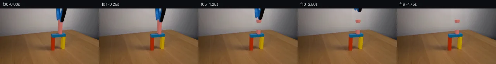

![首帧]()

Round 00
2026-11-05T13:15:30.685004+00:00像素候选变化代码 +228/−0inspection 更新
pixels b935806d6e26b7bb · code 98fd7aeba7f99145
查看本轮 generate.py 真实 diff
--- previous/generate.py +++ current/generate.py @@ -0,0 +1,228 @@ +#!/usr/bin/env python3 +"""Generate the 20-frame PixelWorld continuation using local pixel operations.""" + +from pathlib import Path + +import cv2 +import numpy as np +from PIL import Image, ImageDraw + +import artifact_io + + +ROOT = Path(__file__).resolve().parent +H, W = 144, 256 + + +def smoothstep(x: np.ndarray) -> np.ndarray: + """Cubic 0..1 easing, also useful for a soft alpha threshold.""" + x = np.clip(x, 0.0, 1.0) + return x * x * (3.0 - 2.0 * x) + + +def wall_model(source: np.ndarray) -> np.ndarray: + """Reconstruct the wall behind the top-entering tool from nearby real pixels. + + A row-wise quadratic is fitted to two unaffected strips. Fine photographic + texture is retained by borrowing residuals from an unaffected strip to the + left, with the modeled horizontal illumination difference added back. + """ + src = source.astype(np.float32) + result = src.copy() + sample_x = np.r_[np.arange(108, 141), np.arange(176, 209)] + target_x = np.arange(W, dtype=np.float32) + + for y in range(0, 56): + fitted = np.empty((W, 3), np.float32) + for channel in range(3): + coeff = np.polyfit(sample_x, src[y, sample_x, channel], 2) + fitted[:, channel] = np.polyval(coeff, target_x) + + # Borrow only small-scale texture from x-40; subtract that location's + # model value so the global gray-wall gradient remains stationary. + for x in range(140, 176): + donor_x = x - 40 + texture = src[y, donor_x] - fitted[donor_x] + result[y, x] = fitted[x] + 0.55 * texture + + return np.clip(np.rint(result), 0, 255).astype(np.uint8) + + +def completed_pink_block(source: np.ndarray, plate: np.ndarray) -> np.ndarray: + """Fill the tiny portion of the pink block hidden by the gripping tip.""" + out = plate.copy() + # The measured block face begins near y=30. Rows 37..42 provide unobscured + # face texture and shading for the six hidden rows above them. + for y in range(29, 37): + # The block narrows subtly toward its lower edge in the source. + left = 149 if y <= 33 else 150 + right = 162 if y <= 34 else 161 + donor_y = 37 + ((y - 29) % 3) + for x in range(left, right + 1): + donor_x = min(max(x, 150), 160) + out[y, x] = source[donor_y, donor_x] + + # Feather just the inferred left/right boundaries into the real wall. + for y in range(29, 37): + left = 149 if y <= 33 else 150 + right = 162 if y <= 34 else 161 + out[y, left] = np.rint( + 0.68 * out[y, left].astype(np.float32) + + 0.32 * plate[y, left].astype(np.float32) + ).astype(np.uint8) + out[y, right] = np.rint( + 0.68 * out[y, right].astype(np.float32) + + 0.32 * plate[y, right].astype(np.float32) + ).astype(np.uint8) + return out + + +def tool_silhouette() -> np.ndarray: + """Measured taper envelope for the blue-black grabber.""" + envelope = np.zeros((H, W), np.float32) + key_rows = np.array([0, 8, 16, 22, 27, 29, 31, 33, 35], np.float32) + key_left = np.array([143, 143, 144, 144, 145, 146, 148, 149, 149], np.float32) + key_right = np.array([173, 172, 170, 169, 167, 166, 166, 165, 163], np.float32) + for y in range(36): + left = int(np.floor(np.interp(y, key_rows, key_left))) … diff truncated; 141 more lines …